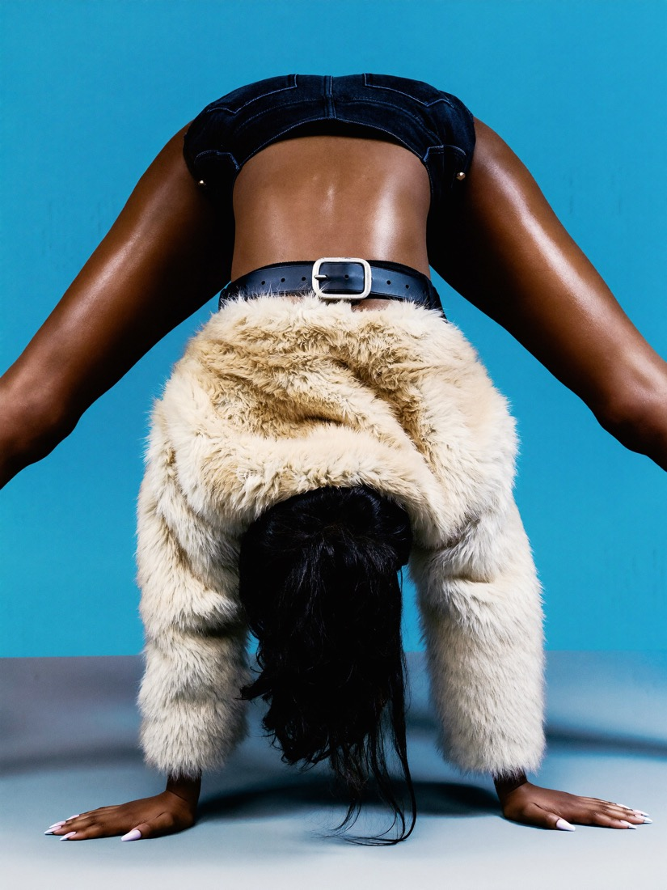

How it holds up
Build the product first, then the world around it.
AI product photography usually fails in one of two ways: the product comes back slightly wrong, or the set looks like six different people made it. Both come from generating first and thinking later.
Forvr works the other way round. Your product is built once from your own photos, so the label, shape, fabric and colour hold. The world it sits in is designed and locked before any image is made, then the whole set is graded as one shoot and corrected by hand where it drifts.
Your own product photos. Phone shots in even light are fine.
Web, social and print crops, one grade across the set.
Days for a set. Three free pieces in 72 hours.

What you can get
FOUR KINDS OF FRAME.
PRODUCT
Clean, accurate product on a set built for it.
- Packshots and hero images
- Detail and texture close-ups
- Colourways from one master
LIFESTYLE
Your product in use, in a world that fits the brand.
- Homes, streets, kitchens, studios
- Seasonal and launch scenes
- No location to book
ON MODEL
Clothing and accessories worn by a cast built for you.
- Fit and print placement checked
- The same cast across the set
- Lookbooks and drops
CAMPAIGN
Editorial images with an idea behind them.
- Concept and art direction
- One grade across every frame
- Social, web and print crops
Recent sets
THE WORK.
Image sets made in the studio. Spec work is labelled spec.
Fashion is where the portfolio started. Beauty, food and drink, jewellery and homeware use the same method.
Before you ask
QUESTIONS.
Will my product look exactly right?
That is the whole job. Your product is built from your own photos as a fixed reference, so the shape, label, colour and fabric hold in every frame. Each image is checked against the real product and corrected by hand where it drifts before it is delivered.
How much does AI product photography cost?
Every set is priced in writing after a short call, once the brief is clear. When you get in touch, the form asks which budget band you have in mind, so we can tell you straight away what fits.
Is it cheaper than a product shoot?
Usually, because there is no studio, crew, model or location to book, and a new angle or a new background does not mean a new shoot day. For a single packshot on white a traditional photographer can still be the cheaper option, and we will tell you if that is the case.
What do you need from me?
Clear photos of each product from a few angles, plus your logo files. Phone photos in even light are fine. If what you have is not usable, we tell you exactly what to shoot.
Can you put my clothing on a model?
Yes. Garments are built from your product photos and dressed onto a cast built for your brand, with fit, fabric and print placement checked against the real piece.
Do you only work with fashion brands?
No. Fashion and streetwear is where a lot of the portfolio started, but the same method works for any brand with a product or a place to show: beauty and skincare, food and drink, jewellery, homeware, hospitality and local service businesses. Websites are built for any kind of business.
Can I use the work in paid ads?
Yes. Usage is agreed in writing with each project and, as standard, finished work you have paid for can run across organic social, paid ads, your website and print.